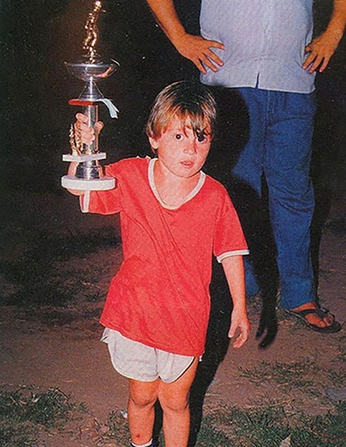

Primeros años
Lionel Messi nació en Rosario, Argentina, en 1987. Desde pequeño mostró un talento excepcional para el fútbol.
Barcelona
A los 13 años se mudó a España para unirse a la cantera del FC Barcelona. Allí desarrolló toda su carrera profesional hasta 2021.
PSG e Inter Miami
Tras dejar Barcelona, Messi jugó en el PSG y luego continuó su carrera en Inter Miami, dejando una huella imborrable en el fútbol mundial.
